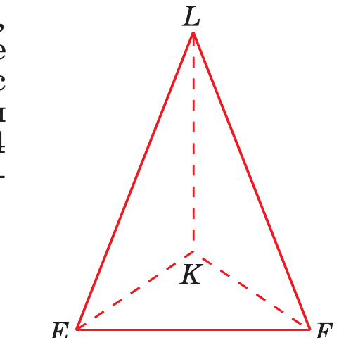
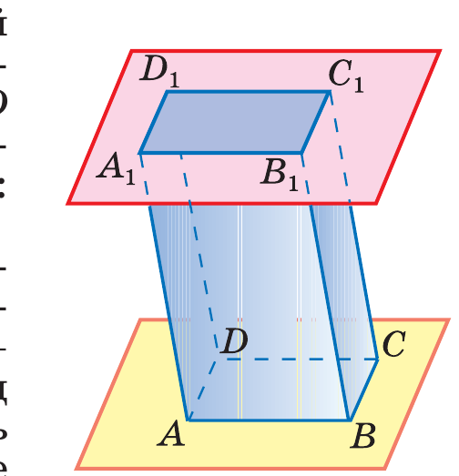
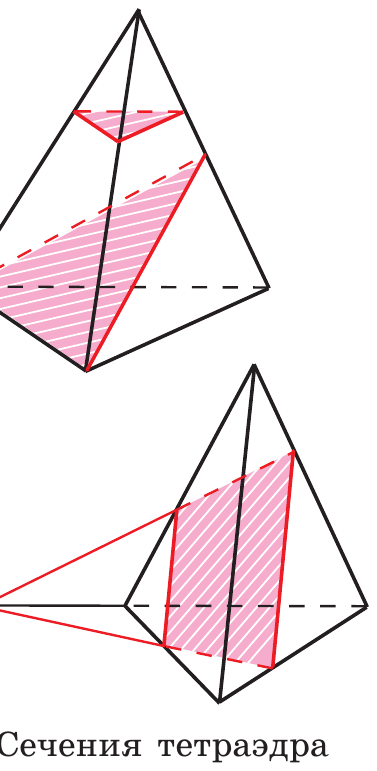
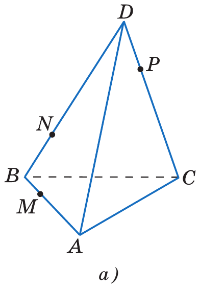
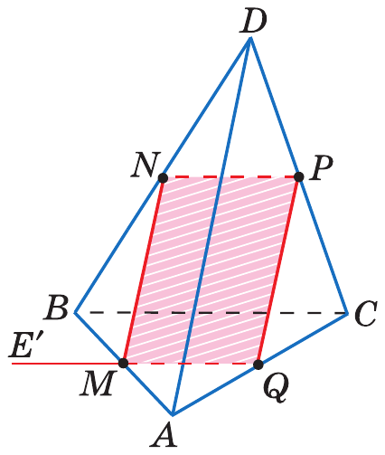
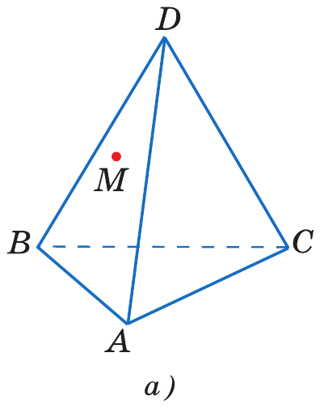

Теория
Тетраэдр
Возьмём треугольник ABC и точку D вне его плоскости. Соединим D с вершинами — получим ещё три треугольника DAB, DBC, DCA. Поверхность из четырёх треугольников называется тетраэдром и обозначается DABC.


| Элемент | Сколько | Пример |
|---|---|---|
| Грани (треугольники) | 4 | ABC, DAB, DBC, DCA |
| Рёбра | 6 | AB, BC, CA, DA, DB, DC |
| Вершины | 4 | A, B, C, D |
| Пары противоположных рёбер | 3 | AD и BC, BD и AC, CD и AB |
Противоположные рёбра — рёбра без общих вершин. Они всегда скрещиваются (урок 3: одно лежит в грани, другое пересекает её плоскость в точке вне первого).
Основание — грань, которую мы условились считать нижней; остальные три — боковые грани. Какую грань назвать основанием — договорённость.
Как рисовать: четыре точки-вершины, и каждую соединяем с каждой (получится 6 рёбер). Рёбра, которые закрыты от нас самим телом, рисуем штрихом. На рис. 34 штриховое одно ребро — AC, на рис. 35 мы смотрим сверху, и закрыты три ребра EK, KF, KL.
Параллелепипед
Возьмём два равных параллелограмма ABCD и A₁B₁C₁D₁ в параллельных плоскостях так, что AA₁, BB₁, CC₁, DD₁ параллельны. Боковые четырёхугольники тоже окажутся параллелограммами: например, у ABB₁A₁ стороны AA₁ ∥ BB₁ по построению, а AB ∥ A₁B₁ по свойству 1° параллельных плоскостей (урок 4). Поверхность из шести параллелограммов — параллелепипед ABCDA₁B₁C₁D₁.


| Элемент | Сколько | Комментарий |
|---|---|---|
| Грани | 6 | все — параллелограммы |
| Рёбра | 12 | по 4 в каждом из трёх направлений |
| Вершины | 8 | |
| Диагонали | 4 | AC₁, BD₁, CA₁, DB₁ |
Смежные грани — имеют общее ребро. Противоположные грани — не имеют общих рёбер (таких пар три). Противоположные вершины — не лежат в одной грани. Диагональ параллелепипеда — отрезок, соединяющий противоположные вершины (не путать с диагональю грани!).
Отрезок AC легко принять за «диагональ параллелепипеда», но это диагональ грани ABCD: обе его точки лежат в одной грани. Диагональ параллелепипеда проходит сквозь тело, из нижней грани в верхнюю. Быстрая проверка: концы диагонали параллелепипеда не лежат ни в одной общей грани.
Противоположные грани параллелепипеда параллельны и равны.

Докажем для граней ABB₁A₁ и DCC₁D₁.
Параллельность. AB ∥ DC (грань ABCD — параллелограмм) и AA₁ ∥ DD₁ (грань ADD₁A₁ — параллелограмм). Две пересекающиеся прямые одной грани параллельны двум прямым другой ⟹ по признаку (урок 4) грани параллельны.
Равенство. AB = DC, AA₁ = DD₁; углы A₁AB и D₁DC равны, так как их стороны сонаправлены (урок 3). Два параллелограмма с равными соседними сторонами и равным углом между ними равны. ∎
Диагонали параллелепипеда пересекаются в одной точке и делятся ею пополам.

Шаг 1. Четырёхугольник A₁D₁CB: A₁D₁ ∥ AD ∥ BC и A₁D₁ = AD = BC ⟹ это параллелограмм. Его диагонали A₁C и D₁B пересекаются в точке O и делятся ею пополам.
Шаг 2. Четырёхугольник AD₁C₁B — тоже параллелограмм (так же: AB ∥ D₁C₁ и равны). Его диагонали AC₁ и D₁B делятся пополам точкой пересечения. Но середина D₁B — это O. Значит, AC₁ тоже проходит через O и делится ею пополам.
Шаг 3. Четырёхугольник A₁B₁CD — тоже параллелограмм (A₁B₁ ∥ DC и они равны). Его диагонали A₁C и B₁D делятся пополам точкой пересечения, а середина A₁C — это O. Значит, и четвёртая диагональ DB₁ проходит через O и делится ею пополам. ∎
Сечения: главный навык
Секущая плоскость тетраэдра (параллелепипеда) — любая плоскость, по обе стороны от которой имеются точки данного тетраэдра (параллелепипеда). Она пересекает грани по отрезкам. Сечение — многоугольник, сторонами которого являются эти отрезки.
Представь, что тело — кусок сыра, а секущая плоскость — нож. Срез на сыре и есть сечение. Сколько сторон может быть у сечения? Не больше, чем граней: каждая грань даёт не более одной стороны.
| Тело | Граней | Какие сечения возможны |
|---|---|---|
| Тетраэдр | 4 | треугольник, четырёхугольник |
| Параллелепипед | 6 | треугольник, четырёх-, пяти-, шестиугольник |



Три правила, на которых держатся все построения
Если две точки секущей плоскости лежат в одной грани, соединяем их отрезком — это сторона сечения (аксиома А2). Точки, у которых нет общей грани, напрямую не соединяем: такой отрезок прошёл бы внутри тела и не лежал бы ни в одной грани, а сторона сечения всегда лежит в грани.
Если секущая плоскость пересекает две параллельные грани, то отрезки сечения на них параллельны (свойство 1° параллельных плоскостей, урок 4). У параллелепипеда противоположные грани параллельны — значит, это правило работает всегда.
Если в одной грани есть две точки сечения, а нужно перейти в соседнюю грань, продлеваем отрезок сечения до пересечения с прямой, содержащей ребро соседней грани. Получаем точку, общую для секущей плоскости и плоскости соседней грани (её называют точкой следа). Две такие общие точки задают прямую, по которой секущая плоскость режет плоскость грани (аксиома А3).
Порядок действий при построении сечения — задавай себе эти вопросы по очереди:
- Какие из данных точек лежат в одной грани? — соединяю их (правило 1).
- Есть ли грань, параллельная той, где уже есть отрезок, и в ней — точка сечения? — провожу через эту точку параллельный отрезок (правило 2).
- Если не хватает точек — продлеваю отрезок сечения и ребро той же грани до пересечения («выход на след», правило 3).
- Обвожу полученный многоугольник и проверяю: каждая сторона лежит в своей грани, на каждой грани не больше одной стороны.
Самая частая ошибка — «пересекать» прямые, лежащие в разных плоскостях. На рисунке скрещивающиеся прямые тоже могут казаться пересекающимися, но это только обман изображения: в пространстве общей точки у них нет. Прямую NP можно продлевать до пересечения с BC только потому, что обе лежат в одной грани BCD. Перед каждым «продлеваю до пересечения» спрашивай себя: «в какой плоскости лежат обе прямые?»
Три задачи
Задача 1. Сечение тетраэдра плоскостью MNP
На рёбрах AB, BD, CD тетраэдра ABCD отмечены точки M, N, P. Построить сечение плоскостью MNP.



- M и N лежат в грани ABD → проводим MN. N и P лежат в грани BCD → проводим NP. (Правило 1.)
- Нужна сторона в грани ABC. Там есть только одна точка — M. Нужна вторая общая точка плоскостей MNP и ABC.
- Прямые NP и BC лежат в одной плоскости BCD → продлеваем их до пересечения в точке E. Точка E лежит на NP (значит, в секущей плоскости) и на BC (значит, в плоскости ABC). (Правило 3.)
- Точки M и E — две общие точки секущей плоскости и плоскости ABC, поэтому эти плоскости пересекаются по прямой ME (аксиома А3). На рис. 40, б прямая ME пересекает ребро AC в точке Q.
- Соединяем P и Q (обе в грани ACD). Сечение — четырёхугольник MNPQ.
- Особый случай: если NP ∥ BC, то NP параллельна плоскости ABC, и по свойству 1° (урок 2) след на ABC идёт через M параллельно NP.
Задача 2. Сечение тетраэдра, параллельное основанию
Точка M лежит на боковой грани ADB тетраэдра DABC. Построить сечение плоскостью, проходящей через M параллельно основанию ABC.


- Секущая плоскость параллельна плоскости ABC. Плоскость каждой боковой грани пересекает обе эти параллельные плоскости, поэтому по свойству 1° параллельных плоскостей (урок 4) след на боковой грани параллелен стороне основания, лежащей в этой грани.
- В грани ADB через M проводим прямую ∥ AB; она пересекает DA в точке P и DB в точке Q.
- В грани ADC через P проводим прямую ∥ AC; она пересекает DC в точке R.
- Соединяем Q и R (грань BDC). Сечение — треугольник PQR, подобный ABC.
Задача 3. Сечение параллелепипеда по трём точкам
На рёбрах параллелепипеда даны точки A, B, C. Построить сечение плоскостью ABC. Ответ зависит от того, на каких рёбрах лежат точки — на рис. 39 все три случая.
- Точки на трёх рёбрах из одной вершины (рис. 39, а): каждые две точки лежат в одной грани, соединяем попарно — треугольник ABC.
- Рис. 39, б: A и B лежат в левой грани, B и C — в задней: проводим AB и BC. Передняя грань параллельна задней, поэтому в ней через A проводим прямую ∥ BC; правая грань параллельна левой — в ней через C проводим прямую ∥ AB (правило 2). Они дают на рёбрах нижней грани точки E и D. Проводим ED — пятиугольник ABCDE.
- Рис. 39, в — самый трудный. A и B лежат в левой грани. Продлеваем AB и нижнее ребро левой грани до пересечения в точке M (точка следа на плоскости основания). Через M — прямую ∥ BC (BC лежит в верхней грани, а она параллельна нижней — правило 2): это след секущей плоскости на основании; он пересекает рёбра основания в E и F. В правой грани (она параллельна левой) через E — прямую ∥ AB, получаем D. Проводим AF (передняя грань) и CD (задняя грань) — шестиугольник ABCDEF.
GeoGebra: сечения своими руками
В GeoGebra 3D сечение строится одной командой. Сначала построй сечение на бумаге, потом проверь себя.
Сечение тетраэдра
- A=(0,0,0)
- B=(4,0,0)
- C=(1.5,3.5,0)
- D=(1.8,1.2,4)
- t=Pyramid(A,B,C,D)
тетраэдр - M=Point(Segment(A,B))
точка на ребре AB — её можно двигать - N=Point(Segment(B,D))
точка на ребре BD - P=Point(Segment(C,D))
точка на ребре CD - s=IntersectPath(Plane(M,N,P),t)
сечение — многоугольник
Двигайте точки M, N, P — сечение меняется: становится то треугольником, то четырёхугольником. Поставьте N и P так, чтобы NP ∥ BC, — и посмотрите особый случай задачи 1.
Сечение параллелепипеда (куба)
- c=Cube((0,0,0),(4,0,0),(4,4,0))
куб с ребром 4 - K=(0,0,2)
середина вертикального ребра - L=(4,4,2)
середина противоположного вертикального ребра - B1=(4,0,4)
вершина - s=IntersectPath(Plane(B1,K,L),c)
сечение — проверьте построенное сечение
- s2=IntersectPath(Plane((2,0,0),(4,2,0),(4,4,2)),c)
пример шестиугольного сечения
Если команда IntersectPath недоступна в вашей версии, используйте Intersect(<плоскость>, <многогранник>) — результат тот же.
Задачи урока
Сначала устно, потом письменно. Решай с обоснованием: на каждый шаг — ссылка на аксиому, теорему или признак.
Тест к уроку
Домашнее задание
Задачи Д1–Д6 ниже: к каждому сечению — чертёж и список шагов «что соединяю и почему». Выучить три правила построения сечений и свойства параллелепипеда; повторить признаки и свойства параллельности (уроки 2–4).